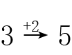
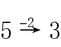
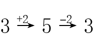
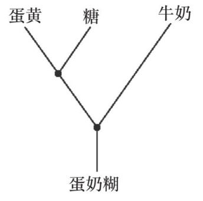
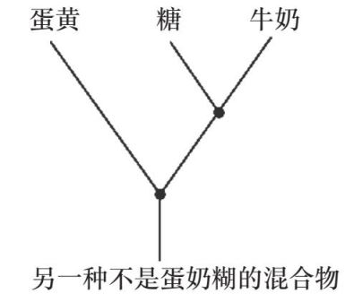
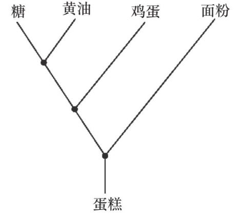
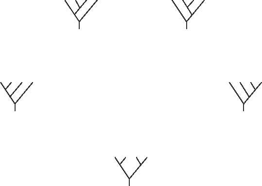
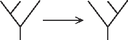
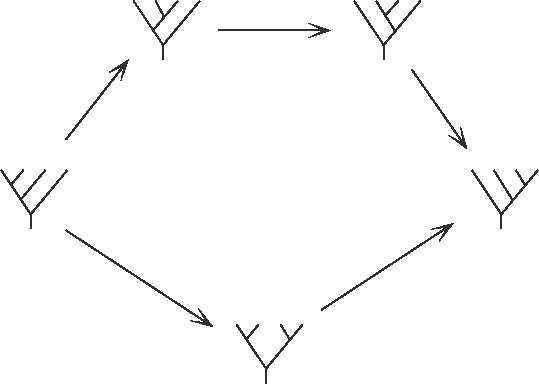
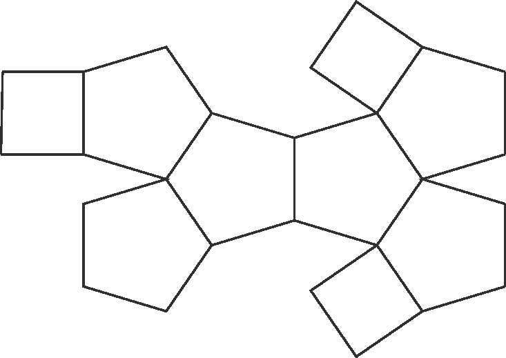

生巧克力曲奇生巧克力曲奇
生巧克力曲奇生巧克力曲奇原料
100克无糖杏干
50克去核的枣
60克磨碎的杏仁
100克玉米淀粉
90克生可可粉
60克生可可脂
15克椰子油
方法
1. 慢慢地将可可脂和椰子油融化。
2. 把所有原料扔进搅拌机，直到混合物看起来像是做曲奇的面团时再停止。
3. 把面团放在撒了可可粉的烤盘纸上压平，然后擀得尽可能薄。
4. 将面皮切成棋盘状，放入冰箱冷却直到固定成型。
我们之前已经讨论过无麸巧克力布朗尼的食谱了。但如果我们还想制作纯素食的版本，或者无糖版本，或者低脂版本呢？所有这些都是可能的，但是我们的成品会越来越不像真正的布朗尼。如果你每次只使用一样替代品来替代其中的一种原料，那成品的区别可能还不会太大，但随着你使用了越来越多的原料替代品，你就离最初的布朗尼越来越远了。
本章开头给出的这个食谱不仅是无麸的、纯素的、无糖的、低脂的，而且还是生的。不讨论生食是否健康，未经烘焙的生巧克力对我而言是一种绝佳的美味，这也是我发明这个食谱的初衷。但我并不确定“生曲奇”这个名字是否合适，因为根据“曲奇”（cookie）这个名字本身的写法，它应该是“经过烘焙的”（cooked）。但我们所做的这种巧克力甜品在其他方面与曲奇很类似：材质类似，味道类似（在我看来味道还要更好），并且在我的日常饮食中扮演着类似的角色——一个奖励，一样零食，一种搭配咖啡食用的甜点。
范畴论研究的一个重要目的就是准确描述有细微差别的“相同”。我之前已经讲过，“相等”是一个十分严格的概念，实际上没有很多事物是真正严格意义上相等的——你只能跟你自己相等。但是，还是有一些事物在某些特定的情境下可以被认为是差不多相等的。
通过强调事物之间的关系，范畴论让我们得以探索一种比相等更微妙的关系概念——相同（sameness）。在范畴论中，这些类似于相等的事物之间的关系尤其重要。当然，讨论问题的情境是很重要的，因为有些事物在某些情境中可以被视为相同，但在其他一些情境中则不能。我最喜欢的一类“误认相同”的实际例子是网络购物，你会发现，电脑总是试图替人来断定哪些事物是“相同的”。
更好和更差的替代品
可以在网上购买食材和日用品这件事大大改变了我的日常生活。我很不擅长在实体店购买食材和日用品，因为我总是会被货架上那些看起来很好吃的东西诱惑而买一些会让我发胖或者花太多钱的东西。然而，当我在网上购物的时候，我完全不会被眼前晃来晃去的购物广告诱惑（但如果他们发明出一种办法能让刚烤好的曲奇的味道从电脑屏幕中飘出来，我可能就难以抵挡了）。此外，我还不必自己把买好的东西搬回家。
不过，我一直对网络商店推荐替代品的方法有所质疑。这种替代品的推荐逻辑是：如果你要买的某样东西缺货了，网站就会自动给你推荐另外一样它认为与之类似的东西，但你可以选择拒绝购买。
有一次，就在圣诞节前，我想购买4包每包500克的球芽甘蓝。是的，我买了很多，因为我觉得它们既好吃又管饱，而且非常健康。作为给自己的奖励，我有时候会用它们蘸我自己做的几乎不加糖的黑巧克力酱吃。总之，网站告知我没有500克一包的球芽甘蓝，于是向我推荐了4包每包100克的球芽甘蓝。没错，是4包共400克，而不是我原本想要的2千克，也就是20包。
我听过的最好笑的网站推荐替代品事件发生在我朋友身上。我的那位朋友想买的是牙刷，而网站在她想买的牙刷没有货时给她推荐了一把马桶刷。我猜，电脑系统显然更关注事物的内在属性（“它们都是刷子”），而非它们在用户的生活中扮演的角色。
我们已经了解到，范畴论通过研究事物之间的关系（而不只是事物本身的特性）来研究具体情境中的事物。这种做法的目的之一是准确界定哪些事物在某些情境下可以被视为“相同”。这正是数学的核心。举一个基本的例子，求解方程式的实质内涵就是寻找相同。你从一个某物和某物相等的陈述出发，然后用一些更进一步的、同样表示某物等于某物但包含更多有效信息的陈述来替代它，直到你最终得到所有有助于求出未知量的关键信息。
方程式或等式为我们提供了理解同一概念的不同方式。比如：
3×4=4×3
这个等式告诉我们，3袋苹果、每袋有4个的总苹果数，和4袋苹果、每袋有3个的总苹果数是一样的，虽然这两个情境并不完全相同。同样，我们还有如下等式：
5 +（5+3）=（5+5）+ 3
这个等式告诉我们，先算5+3，在其结果上再加5之后的最终结果，与先算5+5，在其结果上再加3的最终结果是相同的。再一次，两者并不是完全相同的过程。而事实上，这正是这个等式有用的原因——第二种方法（先算5+5）计算起来会更简单，因为5+5的结果是10，而你可以很快算出10+3的结果。如果你用等式左边的方法去算，在第二步你就需要计算5+8，对大部分人而言，这比计算10+3要更难一些。
我们可以看到，上述两个例子中的等号隐藏了很多信息。它并不意味着左边和右边完全相等，因为很明显二者是有区别的。它只意味着遵循左边的方法或右边的方法，你得到的答案会是一样的。这提示了我们一个可能会让我们稍微有些不舒服的事实，即真正严格意义上的等式只有那种等号的左边和右边完全一样的情况，比如：
1=1
或是：
x=x
但这些等式完全没有意义。真正有用的等式是那种告诉我们做一件事的两个不同的方法“在某种程度上相同”的等式。
范畴论的目的之一是确切定义“在某种程度上相同”的各种不同解释的可能含义是什么，因为在不同的情境中，有用的或者有关的关于相同的解释是不同的。在范畴论里，有时当我们说某些事物“相等”的时候，我们实际上并不是完全诚实的。这是一种善意的谎言，通常而言不会造成什么麻烦，除非你遇到了某些更微妙的情境。此时你会发现，你要说的这种善意的谎言越来越多，于是你不得不开始把它们记录下来。数学系的学生一般从本科高年级或研究生阶段才开始学范畴论，原因之一就是在那之前，忽略那些数学里的善意谎言不会造成太大的问题。
以下是一些我们已经探讨过的关于“相同”而非严格意义上的“相等”的例子。
• 一对相似三角形，它们有相等的内角和不同的边长。
• 拓扑学上的相同，比如一个甜甜圈和一只咖啡杯是“相同的”，因为其中一个可以连续变形为另一个的样子，就像捏一块橡皮泥一样。
• 等边三角形的对称和数字1、2、3的排序方式，因为我们可以把三角形的三个角标注为1、2、3，然后看看当我们翻转或旋转三角形的时候这三个数字的相对位置。
• 我们在上一章见过的不同版本的“巴腾堡蛋糕”，包括：模2加法，1和-1的乘法表，正数和负数的乘法表，实数和虚数的乘法表，矩形的旋转。
在范畴论里，这个过程有时是反过来的——我们不再问在某个特定的情境中什么算是“相同”的，而是先找到我们希望什么事物是相同的，然后问怎样的情境能让它们相同。有时，答案并不是显而易见的。比如，在现实生活中，或者说在一般意义上的“类别”定义下，我们并不会认为甜甜圈和咖啡杯可以算作“相同”的事物。而我们希望它们被视为相同的事物这个事实恰恰意味着数学家已经建立了可以用来研究它们的更为精妙、复杂的类别或范畴。实际上，建立起这些更为精妙、复杂的范畴其背后的理论本身就是数学重要的一部分，这也是当前范畴论研究的一个主要部分。
在这一章，我们将会讨论范畴论是如何用更准确的方式描述这些概念的。
牺牲某些相同以换取更大的利益
就在1805年10月21日特拉法加战役即将打响的关键时刻，英国海军中将纳尔逊为激励他的舰队发出了其闻名今日的作战信号：
英格兰期盼人人都能恪尽职守。
这是纳尔逊在其舰队取得那场著名的胜利之前发出的旗语信号。不过，纳尔逊原本想要发出的信号是：
英格兰相信人人都能恪尽职守。
这两句话的语气实际上存在着微妙的差异。在原本的信号中，纳尔逊使用的是“相信”（confide）一词的一个现在几近消失的意思：他不是在说“英格兰向大家吐露一个秘密”（这是confide一词最常见的用法），而是在说英格兰相信每个人都会尽到自己的职责。而“相信”与“期盼”在语气是有差异的。前者是一种更有信心的表述。它并不是一个命令，甚至不是一个隐性的命令，它只是一个简单的关于对舰队能赢得这场战役很有信心的陈述。我认为，这是一种典型的英国式的轻描淡写。我们通常不会说“去战胜敌人！”这样的话。不妨想象一下，如果有人在你准备做一件大事之前跟你说“我希望你能表现出色”，而不是“我有信心你会表现得很出色”，你会有怎样不同的感受。
总之，纳尔逊让他的通信官约翰·帕斯科中尉用旗语向舰队发出这个信号，并要求他尽快完成，因为之后他还有一个信号要发。而帕斯科恭敬地建议纳尔逊将“相信”换成另一个词，“期盼”。因为“期盼”在旗语手册里已经有一个对应的动作了，而“相信”则需要用旗语逐个字母地拼写，过于麻烦和耗时。纳尔逊同意了这个改动。
对纳尔逊来说，这两个信号就意思而言足够相同了。但对于通信官中尉来说，新的信号要简单省力很多。
在数学里，我们希望找到在特定情境中近乎相同的事物的目的也是类似的：对于某个事物，我们可以用一个在此情境下与之近乎相同的事物，但在另外一些方面简单很多的事物替代它。也许这个相似的事物是一个更容易处理的事物，或是一个更容易用图表表示出来的事物，或是一个更容易思考的事物。
比如，在拓扑学意义上，一张无限大的纸和一张很小的纸是一样的。实际上，它们都与一个点相同。而知道在拓扑学意义上它们是一样的，我们就能在不同情境中将它们彼此进行替换，这是一种很有用的方法。在某些时候，一个点思考起来是最容易的，因为它真的非常小。但在另一些时候，“一张纸”可能对于解决问题更有帮助。因为在实际生活中，你可以在纸上画一些东西（但在一个点上你就做不到），而在数学里，一张纸也有类似的功能。我在这里说的“一张纸”指的是一个正方形平面。这种平面在拓扑学中是一种很重要的事物，因为它们可以充当“拼贴”其他表面的基本元素。但对于点，我们就无法进行这样的拼贴，因为当你把一个点粘到另一个点上的时候，你还是会得到一个点，因为第二个点除了粘在第一个点上面以外没有别的地方可去。用很多点拼贴成一个曲面是不可能的。这就像用乐高积木来搭建东西，而你只有一块块小小的1×1的积木一样。你只能把它们堆成一座细细的塔。而点甚至更糟，因为它们本身并没有高度，所以堆积它们并不能使其向四周和上方延伸。
我们可以用数学语言描述这个事实。我们这里谈到的相同是“橡皮泥”式的，它被称为同伦等价。一张纸的数学版本就是一个平面。所以在数学中，我们说一个平面与一个点是同伦等价的。
通过把小的空间粘连起来构成大的空间是一个被称为“生成余极限”（taking colimits）的过程。这里我们遭遇的数学绊脚石是：“生成余极限不能保持同伦等价。”这意味着，虽然平面和点是同伦等价的，但平面粘连起来得到的结果与点粘连起来得到的结果会很不相同。比如，把两张纸的两条对边粘起来，你会得到一个圆柱体。而无论是在一般意义上还是在拓扑学意义上，一个圆柱体与一个点都是很不同的，因为前者有一个洞。
小的不同被错误地积累成大的不同
如果你让孩子们从几块巧克力蛋糕中挑选一个，他们总是知道哪一块最好。如果你在分蛋糕时把不是最好的那块蛋糕分给他们，他们就会大失所望，甚至生气大哭。
现在，假设我们可以给每块巧克力蛋糕称重。可以想象，如果你给一个孩子一块100克的蛋糕和一块95克的蛋糕，他们可能注意不到两者的差别。因此这两块蛋糕对于孩子和对于你来说就都是“差不多相同”的。你也可以给这个孩子一块95克的蛋糕和一块90克的蛋糕，而他们可能还是注意不到两者的差别。你还可以给他一块90克的和一块85克的，然后是一块85克的和一块80克的，以此类推，而这个孩子可能始终觉得他拿到的两块蛋糕差不多。你可以一直这样分下去，直到蛋糕为50克，而此时，如果你给他们同时看这块50克的蛋糕和第一块100克的蛋糕，他们一定会说第一块更大。
发生了什么？当我们将一些事物视为差不多相同的时候，一些不该发生的奇怪的事发生了。在数学中，如果我们有：
a=b
b=c
c=d
d=e

你可以一直这样写下去，直到：
y=z
那么你完全可以说a=z是成立的。但对于孩子们拿到的巧克力蛋糕，这一等式并不成立。这就造成了一个问题。因此，范畴论不允许用旧有的描述方式来定义“相同”这个概念。巧克力蛋糕这个例子就不适合应用原有的“相同”概念。我们必须用一种新的公理化方式将这个情境纳入“相同”的范畴。
范畴论希望使用一种与定义“相等”概念足够接近的方式来定义“相同”的概念，这样我们就可以像处理相等的概念一样来处理相同了，只不过要更小心一些。这意味着，对于这个新的相同概念，我们仍然可以使用类似上文中“相等链”的表述，并且可以用某个与原来的事物“相同”的事物来替代前者，并得到“相同”的答案，就像用土豆粉代替面粉做布朗尼，然后仍能得到差不多可以被视为布朗尼的甜点。
在范畴论里，我们可以用事物之间的关系来表示这些相同的概念。我们说过，我们可以用箭头来表示这种关系，并将这种关系称作箭头或态射。其中一些箭头可能看起来与相同这个概念距离很远。比如，对于所有的数字而言，当a≤b的时候，我们就可以画一个箭头a→b。
显然，类似这样的箭头已经完全不像“相同”了，因为我们有3≤10，但显然10完全不像3。但这其实并不是一个好的问题，因为在数字这个基础世界中，“相同”的唯一含义就是“相等”。而为了思考关于相同这个概念的其他更有意思的含义，我们需要将事物之间的关系尽可能地想成从A到B的过程，就像城市中两地间的路线一样。而我们需要回答的问题是：
这个过程（这条路线）可逆吗？
在范畴论里，只有当从A到B的过程可逆的时候，这两个事物才能算作“近乎相同”。如果这个过程只能单向进行，而不能逆向推进，这两个事物就不能被视为相同。
一些几乎可逆的过程
如果你在融化巧克力时足够小心仔细，你就总能让它再次凝结成和原来差不多的样子。对于黄油来说，这件事就比较麻烦了，因为黄油融化后很容易固液分层，因此当它再次凝结的时候，它很可能就和原来不一样了。
那么冰激凌呢？你最好不要尝试融化冰激凌再重新冻住它，因为这种做法可能会让你食物中毒。但我这样做过很多次（因为我不想浪费冰激凌），而重新冻住的冰激凌在我看来就和原来一样。并且我从来没有因此生过病（至少目前为止还没有）。但严格来讲，在冰激凌重新冻住的时候，其内部的空气会跑掉一些，所以重新冻住的冰激凌一般都会比原来更硬一些。
关于把冻住的东西解冻再重新冻住的过程暂且讲到这里。我们现在来想象一下，如果我们把本来不该冻住或没有冻住的东西冻住，然后再解冻呢？对于水，你当然可以进行这样的操作，你可以想做几次就做几次。而对于牛奶，当你把冻住的牛奶解冻以后，它看起来可能就会有些奇怪——如果你选用的牛奶是非均质化的牛奶，它冻住再融化之后看起来就像已经变质了一样。我还是很乐意用这种牛奶来做饭的，但我不会用它给客人泡茶，否则他们多半会认为我疯了。
那么，你试过冻鸡蛋液吗？将鸡蛋在碗中打碎放入冰箱冷冻，再将这碗冻住的鸡蛋液解冻，这碗鸡蛋液可能会让你吓一跳。它的蛋白部分看起来还和之前差不多，但它的蛋黄部分不再是一个可爱的、缓缓流动的扁球体了，它会从蛋白液的表面凸出来，就像被煮过了一样。第一次尝试冷冻和解冻鸡蛋液的时候，我把解冻后的蛋黄切成了两半，没有想到连蛋黄的内部看起来也和煮过的蛋黄一般。我已经不记得它尝起来是什么味道了，但我肯定试着吃过它（你知道，我就是这样的人）。因为我通常只会用到蛋白，所以蛋黄因为冷冻和解冻变得奇怪对我影响并不大。对我来说，经过冷冻又解冻的鸡蛋液就和普通的鸡蛋液一样。（甚至还要更好些，因为在这种状态下，将蛋黄从蛋白液中分离出来要容易很多。）
我用以上这些例子想要表达的观点是，水的冷冻是一个完全可逆的过程，但其他食材的冷冻过程只是“近乎”可逆的。也就是说，当你试着通过解冻或者其他逆转操作将事物恢复原状的时候，你只能得到和最初的事物“近乎相同”的东西。这正是范畴论可以处理的问题，因为范畴论研究的正是“近乎相同”这一概念的具体含义。在很多时候，你在解决问题的过程中可能会得到一个并非完全正确，但是基本上正确的答案。而范畴论为我们提供了一种方法，让我们可以准确描述我们的答案，而不必摇着头嘟囔着说：“呃，差不多是这样吧……”
在数学里，我们不用“可反转的”（reversible）这个词，而是用“可逆的”（invertible）这个词。“加2”就是一个可逆的数学过程。我们可以把这个过程画出来，就像这样：

然后我们可以画出这个过程的逆过程：

为了表明在过程逆转之后我们真的回到了起点，我们可以这样画：

其实在数学里，比过程逆转之后是否回到起点更让我们感兴趣的是，这个先正向后逆向的过程和从最开始就保持原状是否相同。对于数字，两种说法好像并没有什么区别，因为数字运算的正向和逆向过程还没有复杂到能凸显这种差别。但当你开始研究比数字更复杂的事物时，两种说法的差别就体现出来了。
但在数字世界中，仍然有很多过程是不可逆的。我们可以思考一下给数字取平方值的问题。比如：
但我们也有：
因此，如果我们从9出发将这个过程逆转过来，我们应该如何判断答案是3还是-3呢？我们无法判断。因此，取平方值不是一个可逆的过程。
用不同方式组合事物带来不同结果
有些食谱会要求你分离蛋白和蛋黄，有时是因为你只会用到蛋白，比如做蛋白酥皮，或者只会用到蛋黄，比如做蛋奶糊；还有一些时候是因为你会分别用到这两样食材，让它们在最终的成品中和谐共存，比如柠檬蛋白派，其中蛋黄用来做馅料，蛋白用来做蛋白酥皮。另一些食谱也会要求你分离蛋白和蛋黄，但其目的在于，在分离二者之后，你可以用另外一些方式将它们重新混合在一起，比如做巧克力慕斯，你需要先将蛋黄和巧克力混合起来搅拌，再将蛋白打发至硬性发泡程度，然后将其倒入之前搅拌好的蛋黄巧克力混合液中。
在做蛋奶糊（以及其他很多需要分离蛋白蛋黄的食物）时，你必须按照正确的顺序做每件事，并且将原料正确地组合起来。首先搅拌蛋黄和糖，然后倒入牛奶继续搅拌。如果你先搅拌糖和牛奶，然后再倒入蛋黄，你就会得到完全不同的混合物。
做蛋糕就没有那么严格了。我通常会先打发黄油和糖，然后加入鸡蛋，再然后加入面粉。但其实你也可以先搅拌糖和鸡蛋，然后加黄油（不过如果黄油没有完全融化的话，搅拌的效果就没有那么好了）。实际上，随着电动搅拌器和食品料理机的出现，所有这些技术细节都变得不再重要了——基本上，你完全可以把所有的食材都扔进食品料理机，然后按下“工作”按钮即可。
我们可以用下面这张图来表示做蛋奶糊的过程：

我们会注意到，如果糖这个“分支”先和牛奶“分支”连起来再和蛋黄“分支”连起来，结果就会有所不同。也就是：

对于蛋糕来说，我们有一个包含四个分支的示意图：

这些图在数学中被称为“树状图”，因为它们看起来很像一棵树。位于树状图最顶端的那些没有其他分叉的节点，也就是前两张图中被标注为“蛋黄”、“糖”和“牛奶”的点，叫作“叶节点”（leaf），位于最底端的节点被称为“根节点”（root）。树状图是另外一种生动表示一个情境的主要结构的方法。范畴论会非常仔细地研究这类关系，因为这类关系在我们最基础的数学领域通常会被视为理所当然，但在另一些数学领域，这些关系并没有这么显而易见。这里，我们需要再一次讨论结合律这个概念。在我们熟悉的数字世界中，加法遵循这条法则：
（5+5）+ 3=5 +（5+3）
我们可以对此进行推广，用符号替代数字，以表示这条法则对于所有数字的加法都适用：
（x+y）+ z=x +（y+z）
但对于蛋奶糊来说，我们刚才描述的规律是：
（蛋黄+糖）+牛奶 ≠ 蛋黄+（糖+牛奶）
这个表达式中的加号并不完全表示做加法，而这正是整个讨论的目的所在——这是一种比单纯将事物凑到一起更为复杂的组合过程，也说明了为什么这两种“加法”不能等同视之。如果组合这些食材的方法更为粗糙，比如只是“一起扔到一只碗里”，那么这两种加法就可以被视为相同了，但这种组合方式并不能很好地代表我们制作蛋奶糊的实际过程。
对于与做蛋奶糊类似但更简单一些的情境，范畴论拥有很多种研究方法。在这类情境中，根据我们研究的具体关系，类似上一例中关于蛋奶糊的两个不同版本的树状图虽然并不完全相同，但可以被视为“近乎相同”。我们马上就会看到一些用于表示这类近乎相同的关系的几何图。
我们可以试着画出所有包含四个叶节点的树状图，就像制作包含四种原料的甜点一样。我们假设每次只能加一样东西。以下是所有可能的树状图：

现在，为了进一步理解这个情境的内部结构，我们在每一次将一个分支的连接点从左移到右时画一个箭头，因为所有可能的树状图结合起来看其实就是一个移动分支的过程，如下所示：

于是，我们就得到了这个五边形：

这是范畴论中一个非常有名的五边形，每当我们需要思考与用不同的方式组合事物有关的问题时，我们都会用到它。这类问题广泛存在于数学的各个领域，组合事物的方式可以是加法，也可以是许多其他更为微妙、复杂的运算过程。当我们提炼出这个结构，并把它转化为带箭头的树状图时，我们就相当于把一个代数问题转变为一个清晰地整合了所有信息的几何形状。
我们可以再玩一次这个游戏（只不过这一次可能需要付出更多的努力）——写出所有可能的包含五个叶节点的树状图，并且在每次将一个分支从左移向右时画一个箭头。如果我们仔细、正确地完成了这张图，我们就会得到一个三维形状，它包含六个五边形和三个正方形。（我知道这个答案显得十分冗长乏味，但我承认我自己很喜欢玩这个游戏。有一次我尝试着将所有可能的包含六个叶节点的树状图全部画了出来。）你可以把下图所示的图案剪下来，将其折叠成一个三维形状：

注意不要用硬纸板来做，最好是用可以稍稍弯折的纸来做，不然将五边形和正方形粘到一起就会变得很困难。
所有这些结果都来自我们对如何理解组合五种原料的不同过程的思考。这些图形都可以被推广，用来表示包含更多的叶节点的树状图，当然，你最终得到的图形本身也会变得越来越复杂。数学中有好几个领域的研究都与梳理这些复杂图形的问题有关。
我们来思考一下这个数字集合：
{1，2，3}
你觉得以下哪个集合是和它类似的集合？
1.{2，3，4}
2.{2，4，6}
3.{-1，-2，-3}
4.{11，12，13}
5.{101，102，103}
6.{100，200，300}
7.{13，28，42}
8.{猫，狗，香蕉}
第一个集合类似于原集合，是因为它所包含的数字都只是在原来的数字上都加了1。第二个集合类似于原集合，是因为它所包含的数字都是在原来的基础上乘了2。第三个集合类似于原集合，是因为它所包含的数字是原集合内的数字的相反数。第四个集合和第五个集合类似于原集合，是因为它们所包含的数字分别是在原集合内的数字之上加了10和100，类似地，第六个集合是把原集合内的数字都乘了100。
那么，第七个集合呢？这是一个看起来比较随意、没有规律和组合理由可循的集合。而第八个集合甚至不是数字的集合。
值得注意的是，当我们思考哪些集合和原来的集合类似这个问题时，我们会自然地思考集合内的元素之间的关系。但实际上，在数学里，一个“集合”就是一堆我们“忘记了”它们之间的关系的元素。因此从数学上讲，所有这些集合都可以被视为“相同”，理由只有一个：它们每个都只包含三个元素。在这个情境中，这并不是一个关于相同概念的好的、有用的理解，这就是为什么在范畴论里我们会将关于事物之间关系的信息也纳入考虑。
这些集合构成了这样一个情境，其中关于“相同”这个概念的错误理解让太多的事物可以被视为相同。在其他的情境里，类似的错误理解可能并不会让那么多的事物被视为相同。比如我们在本章早些时候讨论过的树状图这个概念，对于这个概念，真正重要的结构是其包含多少个叶节点，以及所有的分支是如何被连接起来的，我们既不需要考虑分支连接起来后形成的角度，也不需要讨论分支的粗细。更多的时候，对于相同这个概念的正确理解并不像这些事物那样明显。比如下面这个数字的集合：
{13，28，41}
这个集合看起来很像上面列出的第七个集合，但这个集合和后者有一个重要的不同——它的第三个数字是前两个数字之和，而这一特征也存在于原集合之中：
{1，2，3}
在下一章，我们将讨论如何表述这样的情境，其中我们关心的不仅是两个元素之间的关系，更是多个元素之间的关系。